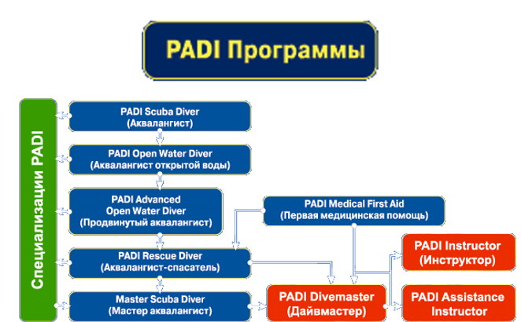
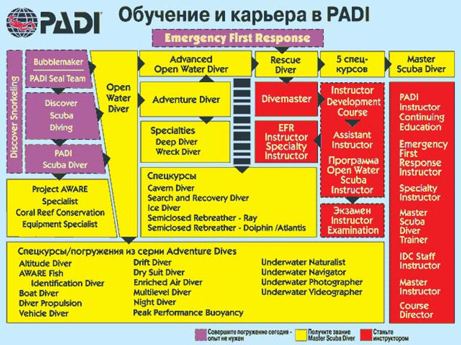
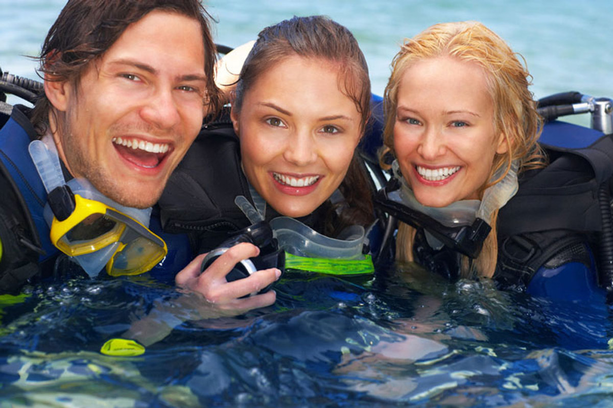

1
Теория
Изучение физики дайвинга, физиологии, планирования погружений, оборудования. Доступно онлайн через PADI eLearning или в нашем классе с кондиционером. Материалы на русском и английском языках.
От первого погружения до профессионального уровня — международная сертификация в тропическом раю


PADI — крупнейшая в мире система сертификации дайверов. Ваш сертификат действует во всём мире и не имеет срока давности. Ко Самуи — идеальное место для обучения: тёплая вода круглый год (28–30°C), отличная видимость, разнообразие дайв-сайтов от мелководных рифов до глубоководных пиннаклов.
Программа для детей от 8 лет. Веселое, простое и безопасное приключение. Погружение в открытой воде до 2м. Используется детское оборудование. Не требует подготовки.
Записаться«Морские котики» — программа для детей от 8 лет. «Аква-Миссии»: погружения на затонувшие объекты, ориентирование, контроль плавучести, подводная фотография. Занятия только в бассейне.
ЗаписатьсяСамая популярная программа знакомства с дайвингом! Пробное погружение в бассейне или море. Средняя глубина 6м, максимальная 12м. Продолжительность ~1 час. Всё оборудование включено. Навыки засчитываются при дальнейшем обучении. Минимальный возраст — 10 лет. ДАЙВИНГ МОЖЕТ ИЗМЕНИТЬ ВАШУ ЖИЗНЬ!
ЗаписатьсяПервый уровень сертификации. Теория + практика + 2 погружения в открытой воде. Является частью курса OW. Позволяет погружаться под руководством профессионала. Навыки засчитываются для OW. Минимальный возраст — 10 лет.
Записаться
Начните путешествие всей жизни! Теория, бассейн, 4 погружения в море. Сертификат признаётся по всему миру. Всё снаряжение включено: маска, ласты, трубка, баллон, регулятор, BCD, манометр, гидрокостюм. Минимальный возраст — 10 лет.
ЗаписатьсяТребуется OW. 5 погружений: 2 обязательных (глубокое + навигация) + 3 на выбор из 15+ вариантов (ночное, рэк, фото, течения, буксировщик и др.). Шаг к Master Scuba Diver. Минимальный возраст — 12 лет.
ЗаписатьсяСамый напряжённый, но самый стоящий курс. Требуется AOW. Самоспасение, управление ЧС, помощь дайверу в панике, СЛР на воде, способы выхода, моделирование сценариев спасения. Минимальный возраст — 12 лет.
ЗаписатьсяОбязателен для Rescue Diver. СЛР взрослым, детям, младенцам. Первая помощь. Использование дефибриллятора. Полезен не только в дайвинге, но и в повседневной жизни. Без возрастных ограничений.
Записаться«Чёрный пояс в дайвинге» — высшее любительское звание PADI. Требуется: 50+ погружений, AOW, Rescue Diver, EFR, 5 специализаций. Минимальный возраст — 12 лет.
Записаться Спецкурсы PADIПервый профессиональный уровень. Работа дайв-гидом, проведение пробных погружений, ассистирование инструктору. Теория из 12 тем, упражнения на выносливость, реальная практика. Требуется AOW + Rescue, мин. 60 погружений. Минимальный возраст — 18 лет.
ЗаписатьсяКарьера инструктора по дайвингу. Требуется: статус Divemaster, 6+ месяцев сертификации, 60+ погружений (включая ночное, глубокое, навигацию), СЛР за последние 2 года, мед. разрешение.
ЗаписатьсяDeep, Night, Nitrox, Wreck, Подводная фотография и ещё 10+ спецкурсов PADI — путь к Master Scuba Diver
Спецкурсы PADIИзучение физики дайвинга, физиологии, планирования погружений, оборудования. Доступно онлайн через PADI eLearning или в нашем классе с кондиционером. Материалы на русском и английском языках.
Отработка основных навыков в бассейне или на мелководье: маска, регулятор, плавучесть, аварийные процедуры. Здесь вы привыкнете к оборудованию в комфортных и безопасных условиях, прежде чем идти в открытое море.
Настоящие погружения в море! Вы применяете все навыки на дайв-сайтах Самуи и соседних островов. Тропические рыбы, кораллы, скаты — всё это станет вашими попутчиками. Максимальные группы — 4 студента на инструктора.
После завершения всех модулей вы получаете электронную карточку PADI (eCard) в приложении на телефон и пластиковую карту по почте. Ваш сертификат признаётся в каждой стране мира и действует бессрочно. Добро пожаловать в семью дайверов!
Минимальный возраст — 10 лет (Junior Open Water Diver). Для курсов необходимо заполнить медицинскую анкету PADI. Если у вас есть хронические заболевания (астма, диабет, сердечные заболевания), потребуется справка от врача. Всё оборудование предоставляется: BCD, регулятор, гидрокостюм, маска, ласты, компьютер. Учебные материалы включены в стоимость. Обучение ведётся на русском и английском языках.